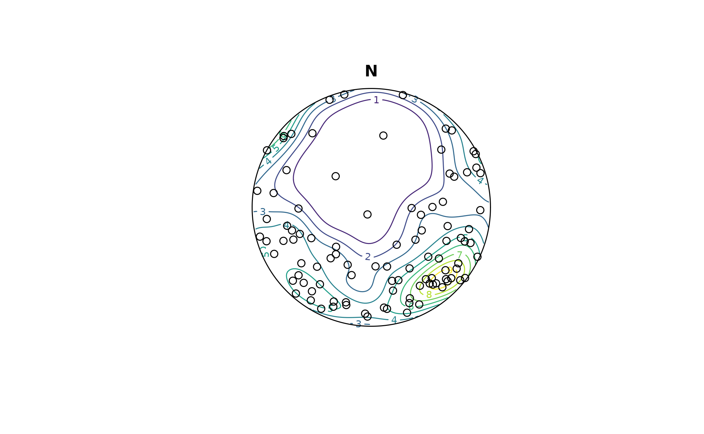
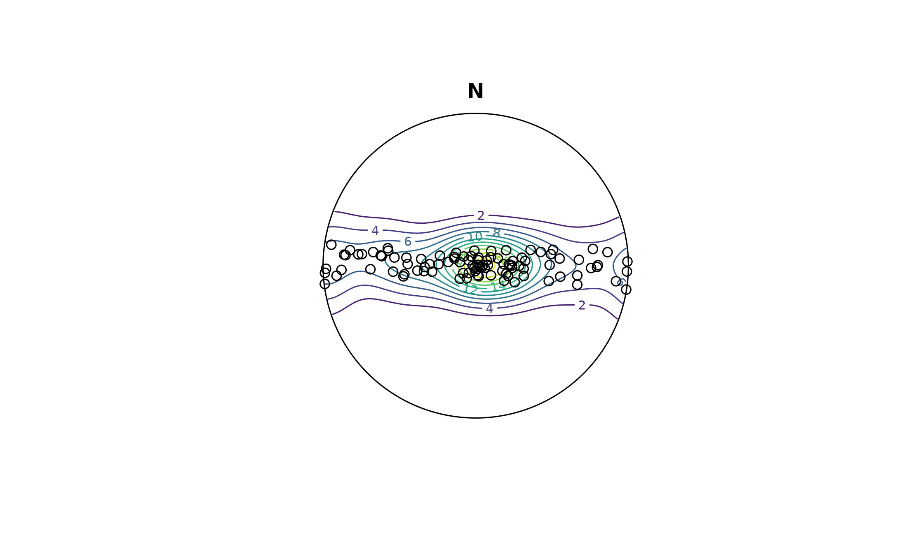

Simulation of random values from a Bingham distribution with any given symmetric matrix A.
Usage
rbingham(n, A, .class = c("Vec3", "Line", "Ray", "Plane"))
rbingham_eig(n, eigenvalues, .class = c("Vec3", "Line", "Ray", "Plane"))
Arguments
- n
integer. number of random samples to be generated
- A
symmetric matrix
- .class
character.
- eigenvalues
numeric, three-element vector. Eigenvalues of the diagonal symmetric matrix of the Bingham distribution.
Value
A spherical object of class .class and length n
References
Fallaize C. J. and Kypraios T. (2016). Exact bayesian inference for the Bingham distribution. Statistics and Computing, 26(1): 349–360. http://arxiv.org/pdf/1401.2894v1.pdf
Examples
a <- cov(iris[, 1:3])
r <- rbingham(100, a, "Line")
contour(r)
points(r)

re <- rbingham_eig(100, c(100, 1, 0), "Line")
contour(re)
points(re)
